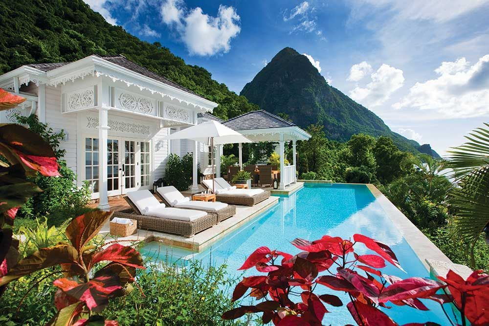

Przegląd rynku
▼
Rynek nieruchomości Saint Lucia oferuje atrakcyjne możliwości dla międzynarodowych inwestorów, napędzany silną turystyką, stabilną walutą (XCD powiązany z USD po kursie 2.70:1) i brakiem podatku od zysków kapitałowych. Wyspa przyciąga kupujących od emerytów i cyfrowych nomadów szukających karaibskiego stylu życia po inwestorów instytucjonalnych rozwijających luksusowe kurorty.
Kluczowe obszary inwestycyjne obejmują północno-zachodnie wybrzeże (Rodney Bay, Cap Estate, Gros Islet), malowniczą Marigot Bay oraz dramatyczny rejon Soufriere w pobliżu Pitons. Południe (Vieux Fort) to wschodzący rynek napędzany rozbudową lotniska Hewanorra i mega-kurortem A'ILA.
Dlaczego warto inwestować w nieruchomości Saint Lucia?
- Brak podatku od zysków kapitałowych, spadkowego ani majątkowego
- Stabilna waluta powiązana z dolarem amerykańskim od 1976 roku
- Własność freehold dostępna dla cudzoziemców (z ALHL)
- Ścieżka CBI: kup zatwierdzoną nieruchomość, uzyskaj obywatelstwo i paszport
- Silny popyt turystyczny wspierający dochody z wynajmu wakacyjnego
- Anglojęzyczny, system prawny common law (oparty na prawie angielskim)
- Całoroczny tropikalny klimat przyciągający międzynarodowych gości
Rodzaje własności nieruchomości
▼Saint Lucia uznaje kilka form własności nieruchomości. Ramy prawne opierają się na angielskim common law, uzupełnione o Land Registration Act (Cap. 5.01) i Condominium Act (Cap. 5.05).
| Typ własności | Opis | Kluczowe cechy |
|---|---|---|
| Freehold | Pełna własność gruntu i budynków bezterminowo | Najczęstszy dla willi i domów. Pełna własność gruntu i budynku. Można sprzedać, przekazać, odziedziczyć. Bez limitu czasowego. |
| Leasehold | Prawo użytkowania gruntu/nieruchomości na określony czas (zwykle 50–99 lat) | Powszechny dla gruntów rządowych i niektórych inwestycji kurortowych. Warunki dzierżawy różne. Mniej powszechny niż freehold w Saint Lucia. |
| Kondominium / Strata Title | Indywidualna własność lokalu w budynku wielolokalowym plus współwłasność części wspólnych | Regulowane przez Condominium Act (Cap. 5.05). Każdy lokal ma określony „udział” określający część wspólną. Roczne opłaty serwisowe. |
| Własność ułamkowa | Współwłasność nieruchomości między kilkoma nabywcami (zwykle 4–12 właścicieli) | Powszechna w luksusowych kurortach. Każdy właściciel posiada udział aktem notarialnym. Niższy koszt wejścia. Wykorzystywana w programie CBI A'ILA Resorts (od $300K). |
System rejestracji gruntów
Saint Lucia prowadzi system rejestracji gruntów typu Torrens na mocy Land Registration Act. Registrar of Lands prowadzi centralny rejestr i wydaje Certyfikaty Tytułu Własności. Wszystkie transakcje gruntowe muszą być zarejestrowane. System zapewnia gwarancję tytułu wspieraną przez rząd, oferując silną ochronę nabywców.
Alien Landholding License (ALHL)
▼Na mocy Aliens (Licensing) Act, wszyscy cudzoziemcy muszą uzyskać Alien Landholding License przed zakupem nieruchomości. Jest to obowiązkowy wymog prawny—żaden transfer nieruchomości na rzecz cudzoziemca nie może być zarejestrowany bez niego.
Wyjątek CBI
Kupujący inwestujący w nieruchomości zatwierdzone w ramach CBI (minimum USD $300,000) nie potrzebują ALHL. Proces CBI przyznaje obywatelstwo. Inwestorzy CIP są również zwolnieni z opłaty skarbowej i wymogu ALHL, oszczędzając ok. 12% kosztów transakcji. Zobacz CBI Nieruchomości.
Proces ALHL krok po kroku
Krok 1: Zaangażuj lokalnego prawnika
Zatrudnij licencjonowanego prawnika z Saint Lucia do obsługi wniosku ALHL, badania tytułu i konwejancji. Honoraria prawnicze za cały proces zakupu wynoszą zwykle 1,5–3% ceny zakupu.
Krok 2: Uzyskaj Certyfikat Kwalifikacyjny
Złóż wniosek do Citizenship by Investment Unit (CIU) o Certyfikat Kwalifikacyjny. Opłaty:
- Certyfikat roczny: EC$3,000 (~US$1,111)
- Certyfikat 10-letni: EC$10,000 (~US$3,704)
Krok 3: Podpisz umowę sprzedaży i wpłać zadatek
Zawrzyj warunkową umowę sprzedaży ze sprzedającym. Wpłać 10% zadatku (depozyt w depozycie notarialnym prawnika), warunkowo od zatwierdzenia ALHL.
Krok 4: Złóż wniosek ALHL
Twój prawnik składa wniosek ALHL do Ministry of Physical Development. Wymagane dokumenty:
- Kopie paszportu (poświadczone)
- Akt urodzenia
- Zaświadczenie o niekaralności
- Referencje bankowe
- Plan geodezyjny
- Projekt umowy sprzedaży
- Dowód źródła środków
Krok 5: Opłata licencyjna
Opłata ALHL na podstawie wielkości nieruchomości:
- Nieruchomości poniżej 1 akra: EC$5,000 (~US$1,852)
- Nieruchomości powyżej 1 akra: EC$10,020 (~US$3,711)
Bezzwrotna opłata aplikacyjna EC$1,500 (~US$556) płatna przy złożeniu wniosku.
Krok 6: Zatwierdzenie i wydanie
Rozpatrywanie trwa zwykle 6–8 tygodni (w niektórych przypadkach do 3 miesięcy). Nieruchomości powyżej 1 akra wymagają zatwierdzenia Gabinetu. Licencja, po przyznaniu, jest stała, dotyczy konkretnej nieruchomości i jest niezbywalna.
Tabela opłat ALHL
| Wielkość nieruchomości | Opłata (USD) | Opłata (XCD) |
|---|---|---|
| Do 1 akra | $2,500 | $6,750 |
| 1–5 akrów | $5,000 | $13,500 |
| 5–10 akrów | $10,500 | $28,350 |
| Powyżej 10 akrów | $10,500+ | $28,350+ |
| Opłata aplikacyjna (bezzwrotna) | $556 | $1,500 |
Ograniczenia własności zagranicznej
- Brak ograniczeń co do rodzaju nieruchomości po uzyskaniu ALHL—mieszkalne, komercyjne, rolne lub niezabudowane grunty
- Nieruchomości powyżej 1 akra wymagają dodatkowego zatwierdzenia Gabinetu
- Obywatele CARICOM mają wzajemne prawa i mogą korzystać z uproszczonego procesu
- Licencja dotyczy konkretnej nieruchomości opisanej we wniosku—nowa licencja jest wymagana dla każdej kolejnej nieruchomości
- Spółki zarejestrowane w Saint Lucia z zagranicznymi udziałowcami również muszą uzyskać ALHL
Proces zakupu nieruchomości
▼Proces konwejancji (typowy czas: 3–6 miesięcy)
1. Wyszukiwanie i oglądanie nieruchomości
Zaangażuj licencjonowanego agenta nieruchomości. Prowizja agenta wynosi zwykle 5–6% ceny sprzedaży (zazwyczaj płaci sprzedający). Sprawdzić strefy zalewowe, cofnięcia wybrzeża i ograniczenia zagospodarowania.
2. Badanie tytułu własności
Twój prawnik przeprowadza badanie tytułu w rejestrze gruntów, aby zweryfikować czysty tytuł, sprawdzić obciążenia (hipoteki, zastawy, ostrzeżenia, służebności) i potwierdzić własność sprzedającego. Saint Lucia stosuje system rejestracji Torrens z gwarancją rządową.
3. Złożenie oferty i negocjacje
Złóż ofertę za pośrednictwem agenta lub prawnika. Negocjuj cenę i warunki.
4. Umowa sprzedaży i zadatek
Podpisz umowę sprzedaży przygotowaną przez prawników. Wpłać 10% zadatku (depozyt notarialny). Umowa warunkowa od zatwierdzenia ALHL i czystego tytułu.
5. Wniosek ALHL
Złóż wniosek o Alien Landholding License (zobacz szczegółową sekcję ALHL powyżej). Rozpatrywanie: 4–8 tygodni.
6. Pomiar geodezyjny
Zlecć licencjonowanemu geodecie potwierdzenie granic i przygotowanie planu geodezyjnego. Wymagane do wniosku ALHL i rejestracji aktu. Koszt: XCD $1,500–$5,000.
7. Finalizacja i przeniesienie własności
Po uzyskaniu ALHL: zapłać resztę ceny zakupu, podpisz akt sprzedaży, zapłać opłatę skarbową i opłaty rejestracyjne, zarejestruj przeniesienie własności. Nowy Certyfikat Tytułu Własności jest wydawany na Twoje nazwisko.
Ważne uwagi dotyczące konwejancji
- Podpisy elektroniczne NIE SĄ ważne dla transakcji nieruchomościowych w Saint Lucia (wyłączone na mocy Electronic Transactions Act 2011)
- Zarówno kupujący, jak i sprzedający powinni mieć niezależną reprezentację prawną
- Wszystkie środki muszą być przelane przez lokalny bank lub rachunek powierniczy prawnika
- Pełnomocnictwo jest dozwolone, jeśli nie możesz być obecny przy podpisaniu
- Upewnij się, że nieruchomość posiada ważne pozwolenie na zagospodarowanie dla bieżącego użytkowania
Podział kosztów transakcji
▼Porównanie rezydent vs. nierezydent
| Pozycja kosztowa | Rezydent | Nierezydent | Uwagi |
|---|---|---|---|
| Opłata skarbowa (kupujący) | 2% | 2% | Płatna przy rejestracji aktu sprzedaży |
| Podatek transferowy (sprzedający) | 5% | 10% | Nierezydenci płacą podwójną stawkę (Vendor's Tax) |
| Honoraria prawnicze | 0.5–2.5% | 0.5–2.5% | Prawnik kupującego + prawnik sprzedającego; skala wg wartości nieruchomości |
| Roczny podatek od nieruchomości (mieszkalne) | 0.25% | 0.25% | Wartości rynkowej, wg Inland Revenue |
| Roczny podatek od nieruchomości (komercyjne) | 0.4% | 0.4% | Wartości rynkowej |
Zwolnienia podatkowe dla inwestorów CIP
Inwestorzy CBI/CIP kupujący zatwierdzone nieruchomości są zwolnieni zarówno z opłaty skarbowej, jak i podatku transferowego, oszczędzając ok. 12% łącznych kosztów transakcji (2% opłaty skarbowej kupującego + 10% podatku transferowego nierezydenta).
Pełny podział kosztów kupującego
| Pozycja | Płaci | Stawka / Kwota | Uwagi |
|---|---|---|---|
| Opłata skarbowa (kupujący) | Kupujący | 2% wartości nieruchomości | Płatna przy rejestracji aktu sprzedaży |
| Podatek transferowy (sprzedający—rezydent) | Sprzedający | 5% wartości | Standardowa stawka dla rezydentów |
| Podatek transferowy (sprzedający—nierezydent) | Sprzedający | 10% wartości | Stawka ryczałtowa dla nierezydentów (Vendor's Tax) |
| Honoraria prawnicze (prawnik kupującego) | Kupujący | 1.5–3% ceny zakupu | Plus XCD $100 opłaty stałej |
| Prowizja agenta nieruchomości | Sprzedający (zwykle) | 5–6% ceny sprzedaży | Negocjowalna |
| Opłata ALHL | Kupujący | $2,500–$10,500 USD | Wg wielkości nieruchomości (zobacz sekcja ALHL) |
| Certyfikat Kwalifikacyjny | Kupujący | $3,000–$10,000 USD | Ważność 1 rok lub 10 lat |
| Opłata skarbowa od hipoteki | Kupujący | 1–1.2% | Dotyczy finansowania hipotecznego |
| Pomiar geodezyjny | Kupujący | XCD $1,500–$5,000 | Wymagany dla ALHL i rejestracji aktu |
| Opłata rejestracyjna | Kupujący | XCD $100–$500 | Opłata rejestru gruntów |
Przykład: Łączne koszty kupującego przy nieruchomości USD $500,000 (poniżej 1 akra)
| Cena zakupu | $500,000 |
| Opłata skarbowa (kupujący, 2%) | $10,000 |
| Honoraria prawnicze (kupujący, ~2%) | $10,000 |
| Opłata ALHL (poniżej 1 akra) | $2,500 |
| Opłata aplikacyjna ALHL | $556 |
| Certyfikat Kwalifikacyjny (1 rok) | $3,000 |
| Pomiar geodezyjny | $1,000 |
| Rejestracja | $200 |
| Łączne koszty kupującego | ~$527,256 |
| Koszty zamknięcia jako % ceny | ~5.5% |
Przy sprzedaży jako nierezydent
Nierezydenci-sprzedający płacą 10% podatku transferowego (Vendor's Tax) od ceny sprzedaży—znacznie więcej niż 5% płacone przez rezydentów. Rozważ, czy uzyskanie rezydencji lub obywatelstwa (przez CBI) zmniejszyłoby Twoje zobowiązanie podatkowe. W Saint Lucia nie ma podatku od zysków kapitałowych, co częściowo kompensuje wyższy podatek sprzedającego.
Roczne podatki od nieruchomości
▼| Typ podatku | Stawka | Podstawa | Płatność |
|---|---|---|---|
| Podatek od nieruchomości mieszkalnych | 0.25% rocznie | Wartość rynkowa (wg Inland Revenue) | Termin 30 dni od zawiadomienia |
| Podatek od nieruchomości komercyjnych | 0.40% rocznie | Wartość rynkowa | Termin 30 dni od zawiadomienia |
| Podatek od niezabudowanego gruntu | 0.25% rocznie | Wartość rynkowa | Termin 30 dni od zawiadomienia |
Bardzo niskie podatki od nieruchomości według standardów międzynarodowych
Nieruchomość mieszkalna o wartości USD $500,000 płaci rocznie ok. USD $1,250 podatku od nieruchomości (0,25%). Dla porównania, podobna nieruchomość w USA mogłaby płacić $5,000–$15,000 rocznie. Nie ma podatku spadkowego, majątkowego ani od zysków kapitałowych.
Ceny nieruchomości wg typu i lokalizacji
▼
Ceny nieruchomości mieszkalnych (2025–2026)
| Typ nieruchomości | Zakres cen (USD) | Zakres cen (XCD) |
|---|---|---|
| Mały dom startowy (wieś) | $150,000+ | $405,000+ |
| Domy na łonie natury (wzgórza/wieś) | Od $200,000 | Od $540,000 |
| Apartament 2-pokojowy (podstawowy) | $200,000–$300,000 | $540,000–$810,000 |
| Nowoczesne apartamenty (Rodney Bay, Gros Islet) | Od $300,000 | Od $810,000 |
| Willa 3-pokojowa (średnia półka) | $400,000–$500,000 | $1,080,000–$1,350,000 |
| Kamienica nad wodą | $650,000–$700,000 | $1,755,000–$1,890,000 |
| Premium luksus (The Landings) | $850,000–$2,000,000 | $2,295,000–$5,400,000 |
| Rezydencja markowa (Cas en Bas) | $395,000–$900,000+ | $1,066,500–$2,430,000+ |
| Luksusowa willa (Cap Estate / Cabot) | $1,000,000–$12,000,000+ | $2,700,000–$32,400,000+ |
| Ultra-luksusowa posiadłość (plaża) | $3,000,000–$10,000,000+ | $8,100,000–$27,000,000+ |
| Cena za m² (benchmark karaibski) | $5,000–$8,000 | $13,500–$21,600 |
Ceny gruntów wg lokalizacji (za ft², 2025)
| Lokalizacja | USD / ft² | XCD / ft² | Charakter i uwagi |
|---|---|---|---|
| Rodney Bay | $10–$200 | $27–$540 | Premium komercyjny i plażowy na górze skali; marina, restauracje. Najwyższy pułap cenowy na wyspie. |
| Castries | $4–$200 | $11–$540 | Stolica; szeroki zakres od mieszkań na wzgórzach po prime komercyjne przy porcie |
| Cap Estate | $8–$30 | $22–$81 | Prestiżowa dzielnica mieszkalna; pola golfowe Cabot, zamknięte osiedla, widoki na ocean |
| Marigot Bay | $7.50–$35 | $20–$95 | Marina i urok butikowy; żeglarstwo, gastronomia nadbrzeżna |
| Soufriere | $6–$20 | $16–$54 | Bliskość Pitons; ekoturystyka, butikowe kurorty, obszar dziedzictwa UNESCO |
| Laborie | $6–$10 | $16–$27 | Spokojna wioska rybacka na południowym wybrzeżu; przystępny punkt wejścia |
| Vieux Fort | $4–$12 | $11–$32 | Rejon lotniska, wschodzący; rozbudowa Hewanorra i Pearl of the Caribbean napędzają wzrost |
| Dennery (wybrzeże wschodnie) | $4–$6 | $11–$16 | Wybrzeże atlantyckie; wiejskie, niezabudowane, przystępne |
| Choiseul | $2.80–$8 | $8–$22 | Wiejski południowy zachód; dziedzictwo rzemieślnicze, najniższe ceny na wyspie |
Rentowność najmu wg lokalizacji
▼| Obszar | Rentowność brutto (średnioroczna) | Rentowność w sezonie | Objeżenie (szac.) | Uwagi |
|---|---|---|---|---|
| Rodney Bay / Gros Islet | 5–7% | 8–10% | 65–80% | Najwyższy popyt; bliskość plaży, restauracje, marina. Najlepszy dla wynajmu krótkoterminowego. |
| Cap Estate | 4–6% | 7–9% | 55–70% | Luksusowe wille z wysokimi stawkami nocnymi. Niższe objeżenie, ale wyższe przychody za noc. Pole golfowe Cabot napędza popyt. |
| Marigot Bay | 4–7% | 8–10% | 55–70% | Popularny wśród żeglarzy. Silny sezonowy popyt. Ograniczone zasoby wspierają ceny. |
| Soufriere | 3–5% | 6–8% | 45–65% | Premium za widok na Pitons. Urok ekoturystyki. Bardziej sezonowy. |
| Vieux Fort | 3–5% | 5–7% | 40–55% | Wschodzący rynek. Bliskość lotniska. Projekt A'ILA ma odmienić okolicę do 2027. |
Sezonowość dochodów z najmu
Sezon wysoki: Grudzień–Kwiecień (szczyt: Święta Bożego Narodzenia/Nowy Rok i lutowe ferie). Stawki nocne mogą być 2–3x wyższe niż poza sezonem. Sezon niski: Czerwiec–Listopad (sezon huraganów). Planuj 30–50% niższe objeżenie w tych miesiącach. Standardowe roczne rentowności 2–5% dla najmu długoterminowego; najem wakacyjny może osiągać 9–10% rentowności brutto w sezonie wysokim. Markowe rezydencje (Cas en Bas/Hyatt, The Landings) oferują gwarantowane programy zwrotu 6–10%.
Opodatkowanie dochodów z najmu
Dochód z najmu uzyskany w Saint Lucia podlega opodatkowaniu standardowymi stawkami PIT lub CIT (do 30%). Nierezydenci są opodatkowani od dochodów ze źródeł w Saint Lucia. Opłata turystyczna US $3–$6 za osobę za noc dotyczy zakwaterowania krótkoterminowego. VAT 7% dotyczy usług noclegowych turystycznych. Skonsultuj się z lokalnym doradcą podatkowym.
Wynajem krótkoterminowy i Airbnb
▼Wynajem wakacyjny krótkoterminowy znacznie wzrósł w Saint Lucia. Oferty Airbnb wzrosły z 62 do 223 między 2017 a 2024 rokiem, z 80% ocenionych na 4,5 gwiazdki lub wyżej. Rentowności brutto dla nieruchomości krótkoterminowych wynoszą zwykle 3,5–5,25%.
Wymogi regulacyjne
- Brak specjalnej ustawy o licencjonowaniu Airbnb w Saint Lucia
- Operatorzy muszą zarejestrować się w Saint Lucia Tourism Authority (SLTA) na mocy Tourism Levy Act 2020
- Dochód z najmu podlega standardowemu podatkowi dochodowemu (do 30%)
- VAT 7% dotyczy usług noclegowych turystycznych (jeśli obrót przekracza XCD $400,000/rok)
Stawki opłaty turystycznej
| Kategoria | Stawka (za osobę, za noc) |
|---|---|
| Średnia stawka dzienna (ADR) ≤ US$120 | US$3 |
| Średnia stawka dzienna (ADR) > US$120 | US$6 |
| Dzieci w wieku 12–17 lat | 50% obowiązującej stawki |
| Dzieci poniżej 12 lat | Zwolnione |
Praktyczne wskazówki dla hostów Airbnb
- Zarejestruj się w SLTA przed wystawieniem nieruchomości—niezgodność może skutkować karami
- Uwzględnij opłatę turystyczną, VAT (jeśli dotyczy), prowizje za zarządzanie (15–25%) i sezonowe pustostany w prognozach rentowności
- Nieruchomości z niezawodnym internetem (Starlink/światłowód), klimatyzacją i basenem osiągają znacznie wyższe stawki nocne
- Stawki nocne w sezonie (gru.–kwi.) mogą być 2–3x wyższe niż poza sezonem (cze.–lis.)
- Lokalny zarządca nieruchomości jest niezbędny do zameldowania gości, sprzątania i konserwacji
Kluczowe inwestycje deweloperskie
▼Poniżej przedstawiono główne inwestycje mieszkaniowe i kurortowe w Saint Lucia na lata 2025–2026. Nie wszystkie są zatwierdzone w ramach CBI—większość to niezależne inwestycje wymagające ALHL. Pipeline deweloperski wyspy obejmuje ok. ~2,000 nowych pokoi hotelowych.
Otwarcia 2025
| Inwestycja | Lokalizacja | Typ i wielkość | Zakres cen (USD) | Status |
|---|---|---|---|---|
| Secrets St. Lucia Resort & Spa Hyatt Inclusive Collection. Kurort all-inclusive tylko dla dorosłych. |
Choc Beach (północno-zachodnie wybrzeże) | 355-pokojowy kurort all-inclusive. Restauracje, spa, baseny, sporty wodne. | Tylko hotel (brak sprzedaży mieszkań) | Otwarty czerwiec 2025 |
| Cas en Bas Beach Resort Destination by Hyatt. 90 apartamentów. Markowe rezydencje freehold. |
Cap Estate (północ) | 90 nowoczesnych apartamentów: studio, 1-pok., 2-pok. Zarządzane przez Hyatt. Blisko pola golfowego Cabot. | $395,000–$900,000+ | Otwarty 2025 Faza 1 wyprzedana. Faza 2 ~80% sprzedana. Gwarantowane rentowności 6–10%. |
Otwarcia 2026
| Inwestycja | Lokalizacja | Typ i wielkość | Zakres cen (USD) | Status |
|---|---|---|---|---|
| Courtyard by Marriott Pierwszy hotel marki Marriott w Saint Lucia. |
Pointe Seraphine, Castries | 140-pokojowy hotel w rejonie portu wycieczkowego. Podróżni biznesowi i wypoczynkowi. | Tylko hotel (brak sprzedaży mieszkań) | Otwarcie 2026 |
| Sapphire Sands Villas Bay Gardens group. Butikowy ośrodek willowy. |
Reduit Beach, Rodney Bay | 9 luksusowych willi. Spa, fitness, usługa kamerdynera. Bezpośrednio na Reduit Beach z widokiem na Pigeon Island. | Cena na zapytanie | Otwarcie luty 2026 |
| A'ILA Faza 2 (A'ila Palm) Zatwierdzony CBI. Atlas Group / Global Capital Caribbean. |
Mount Pimard, Rodney Bay | 153 pokoje hotelowe + Blue Zones Shopping Center + spa. Część mega-kurortu A'ILA za $870M–$1.3B. | $300,000 (ułamkowy/CBI) / $600,000+ (pełny) | W budowie — cel 2026 |
Ustalone i aktywne inwestycje
| Inwestycja | Lokalizacja | Typ i wielkość | Zakres cen (USD) | Status |
|---|---|---|---|---|
| Cabot Saint Lucia Luksusowa społeczność golfowa i rezydencjalna. |
Cap Estate (półwysep 375 akrów) | Wille punktowe i Horizon Villas (od $5.6M). Point Hardy Golf Club (ranking #76 na świecie). 320 domów planowanych. | $5,600,000–$12,000,000+ | Aktywny — wiele faz |
| The Landings Resort & Spa Freehold. Prywatna marina. |
Rodney Bay / Pigeon Island Causeway | Apartamenty 2–3 pokojowe z mariną. 143 wybudowanych + 21 ostatnich jednostek. | $575,000–$2,250,000 | Aktywny — sprzedaż ostatniej kolekcji |
| Sugar Beach, A Viceroy Resort Luksusowy kurort między Pitons. |
Soufriere (obszar UNESCO Pitons) | 96 pokoi/willi/rezydencji. Trzy 4-sypialniane rezydencje na plaży.  |
Rezydencje: $6,700–$25,000/noc (program najmu) Zakup: na zapytanie, zakres $5M+ |
Operacyjny — ikona luksusu |
| Marigot Bay Resort & Marina Capella destination. |
Marigot Bay | 124 pokoje i apartamenty + rezydencje. Pełna marina (33 stanowiska). Spa, restauracje. | Apartamenty i wille od $450,000+ | Operacyjny |
Projekty nieruchomościowe zatwierdzone w ramach CBI
▼Poniższe projekty zostały zatwierdzone przez Citizenship by Investment Unit (CIU) dla ścieżki nieruchomościowej CBI. Zakup zatwierdzonych nieruchomości (minimum USD $300,000) przyznaje obywatelstwo Saint Lucia bez potrzeby ALHL. Obowiązuje 5-letni okres posiadania.
| Projekt | Lokalizacja | Min. inwestycja CBI | Status (2025) |
|---|---|---|---|
| A'ILA Resorts, Villas & Residences Deweloper: Global Capital Caribbean LLC / Atlas Group. Łącznie: $1.3B. |
Mount Pimard, Rodney Bay | $300,000 (ułamkowy) / $600,000 (pełny) Prognozowana roczna rentowność 4% |
Aktywny — jedyny aktywny projekt CBI Faza 1 (TheLifeCo Wellness, 65 pokoi) otwarta lato 2025. Faza 2 (A'ila Palm 153 pokoje) 2026. Faza 3 2027. |
| Canelles Resort Deweloper: Caribbean Galaxy Real Estate Ltd. |
Anse Canelles, Micoud | $300,000 | Zawieszony / Przegląd prawny Pozew RICO złożony 2024. Potwierdź status z CIU przed inwestycją. |
| Black Bay (dawniej Alpina Saint Lucia) Deweloper: Desert Star Holdings (DSH). |
Vieux Fort | $200,000 (wspólny) / $300,000 (samodzielny) | ZAMKNIĘTY Projekt nie postępował. Nie przyjmuje inwestorów CBI. |
Nieruchomości CBI: kluczowe porady
- Na początku 2026 r. A'ILA Resorts jest JEDYNYM aktywnym projektem CBI. Canelles jest ZAWIESZONY. Black Bay jest ZAMKNIĘTY.
- Harbor Club, Sugar Beach, The Landings i Cas en Bas nie są zatwierdzone w ramach CBI—to niezależne inwestycje.
- Zawsze weryfikuj aktualną listę na cipsaintlucia.com i korzystaj wyłącznie z autoryzowanych agentów CIU.
- Nieruchomości CBI mają 5-letni okres posiadania przed odsprzedażą. Następny nabywca może również kwalifikować się do CBI.
- ALHL nie jest wymagany dla zakupów nieruchomości CBI.
Koszty budowy i pozwolenia
▼Koszty budowy (2025)
| Pozycja | Koszt (XCD) | Koszt (USD) |
|---|---|---|
| Standardowe mieszkalne za ft² | $300 | ~$111 |
| Średniej klasy mieszkalne za ft² | $300–$400 | $111–$148 |
| Luksusowe mieszkalne za ft² | do $450 | ~$167 |
| Hotel 5-gwiazdkowy za ft² | $675–$1,107 | $250–$410 |
| Beton za jard sześcienny | $270–$360 | $100–$133 |
| Wykwalifikowana siła robocza (dzienna stawka) | $150–$200 | $56–$74 |
| Benchmark: dom 2,000 ft² 3-pok. (całość) | $600,000–$1,300,000 | $222,000–$481,000 |
Pozwolenie na budowę i zatwierdzenie DCA
Wszelka budowa wymaga wcześniejszej pisemnej zgody Development Control Authority (DCA) na mocy Physical Planning and Development Act (2001).
| Wymog | Szczegóły |
|---|---|
| Termin decyzji | 90 dni od kompletnego złożenia wniosku |
| Ważność pozwolenia | 12 miesięcy na rozpoczęcie; 30 miesięcy na ukończenie |
| Opłaty za pozwolenie mieszkalne | Od EC$20 |
| Opłaty za pozwolenie komercyjne | EC$0.30 za ft² |
| Normy budowlane | OECS Building Code (2016); wymagana odporność na wiatr 150 mph |
| Kara za nieautoryzowaną budowę | Do EC$10,000 + EC$250/dzień kontynuacji |
| Kontakt DCA | 1-758-468-4438 / 1-758-468-4452 |
Kredyty hipoteczne dla zagranicznych nabywców
▼Saint Lucia jest jedną z najbardziej dostępnych jurysdykcji karaibskich pod względem finansowania hipotecznego dla cudzoziemców. Kilka lokalnych banków udziela kredytów nierezydentom.
| Parametr | Obywatele / Rezydenci | Zagraniczni nabywcy |
|---|---|---|
| Wartość kredytu do wartości (LTV) | Do 90–95% | 50–70% (tj. 30–50% wpłaty wymagane) |
| Oprocentowanie (typowe) | 5–7% | 6–8% |
| Okres | Do 25–30 lat | Do 15–20 lat |
| Waluta | XCD | XCD (niektóre banki oferują USD) |
| Opłata skarbowa od hipoteki | 1–1.2% kwoty kredytu | |
Banki oferujące kredyty na nieruchomości
| Bank | Produkt | Uwagi |
|---|---|---|
| Bank of Saint Lucia (BOSL) | Kredyty gruntowe, budowlane, hipoteczne | Największy bank lokalny. 5 oddziałów. |
| 1st National Bank | Produkt hipoteczny „1st Home” | Zał. 1938. 7 oddziałów. |
| CIBC Caribbean | Kredyty hipoteczne mieszkaniowe | Bank regionalny. Zdolności finansowania handlu. |
| Republic Bank (EC) Ltd | Kredyty mieszkaniowe | Sieć regionalna (117 oddziałów). |
Finansowanie deweloperskie
Niektóre inwestycje kurortowe oferują finansowanie wewnętrzne, które może być bardziej dostępne niż kredyty bankowe. Cas en Bas Beach Resort (Hyatt) oferuje do 50% finansowania deweloperskiego. Zawsze porównuj warunki deweloperskie z oprocentowaniem banków.
Firmy zarządzające nieruchomościami
▼Jeśli jesteś właścicielem nieobecnym, profesjonalne zarządzanie nieruchomością jest niezbędne. Firmy zajmują się konserwacją, zarządzaniem najemcami, marketingiem wynajmu wakacyjnego i zgodnością z lokalnymi przepisami.
| Firma | Usługi | Obszar specjalizacji |
|---|---|---|
| Blue Sky Luxury | Zarządzanie wynajmem wakacyjnym, concierge, inspekcja 300-punktowa, wsparcie 24/7 | Luksusowe wille na całej wyspie. 180+ nieruchomości w portfolio. |
| Islander Villas (Janus) | Zarządzanie wynajmem wakacyjnym pod klucz, marketing, obsługa gości | Inwestycje w wynajem wakacyjny. |
| Oasis Marigot | Usługa wynajmu willi na poziomie hotelowym, concierge, sprzątanie | Marigot Bay i okolice. |
| Paradise Properties | Sprzedaż, wynajem i zarządzanie nieruchomościami | Pełen zakres usług nieruchomościowych. |
Typowe opłaty za zarządzanie nieruchomościami
- Zarządzanie wynajmem długoterminowym: 8–12% dochodu brutto z najmu
- Zarządzanie wynajmem wakacyjnym: 15–25% dochodu brutto z najmu
- Ryczałt za samą konserwację: USD $150–$500/miesiąc
- Jednorazowa inspekcja: USD $50–$150 za wizytę
Mieszkania dostępne i socjalne
▼Rząd adresuje lukę dostępności mieszkaniowej poprzez międzynarodowe partnerstwa i projekty finansowane z CBI.
Inicjatywy mieszkaniowe (2024–2026)
| Inicjatywa | Finansowanie / Wartość | Szczegóły |
|---|---|---|
| Pożyczka Taiwan Eximbank | US$20 milionów | Preferencyjna pożyczka z taiwańskiego Export-Import Bank na budowę mieszkań dostępnych. Skierowana do osób o niskich dochodach i kupujących po raz pierwszy. |
| Mieszkania socjalne Rock Hall | Finansowane z CBI | Projekt mieszkań socjalnych w Rock Hall, finansowany z przychodów programu CBI. |
| Mieszkania socjalne Talvern | Finansowane z CBI | Dodatkowy projekt mieszkań socjalnych finansowany z CBI w Talvern. |
Trendy rynkowe 2024–2026
▼Czynniki popytu
- Rekordowa turystyka w 2024: 435 959 turystów stacjonarnych (+14% r/r) i 723 500 pasażerów wycieczkowych.
- Wzrost programu CBI: 5 642 wniosków CBI w 2023–24 (wzrost o 424%), z ~70% wybierających ścieżkę nieruchomościową. A'ILA Resorts pozostaje jedynym aktywnym projektem CBI.
- Rozbudowa lotniska Hewanorra: Modernizacja za US$175M; budowa oczekiwana Q1 2026, ukończenie do 2029.
- Cabot Saint Lucia: Światowej klasy luksusowy kurort golfowy. Wille w cenie US$5.6M–$12M w segmencie ultra-luksusowym.
- ~2,000 nowych pokoi hotelowych w pipeline'ie.
Ryzyka i uwagi
Kluczowe ryzyka dla inwestorów
- Narażenie na huragany: Saint Lucia leży w pasie huraganów (czerwiec–listopad). Ubezpieczenie od huraganów jest niezbędne (składki: 1–2,5% wartości ubezpieczonej)
- Mały rynek, niska płynność: Odsprzedaż może trwać 6–18 miesięcy
- 10% opłata skarbowa sprzedającego-nierezydenta: Znacząco obniża dochody netto przy wyjściu
- Opóźnienia budowlane: Materiały są w dużej mierze importowane. Opóźnienia w dostawach i harmonogramach wykonawców są powszechne
- Brak Konwencji Nowojorskiej: Saint Lucia nie jest stroną konwencji dot. egzekwowania zagranicznych orzeczeń arbitrażowych
- Niedobory wody: Sezon suchy 2026 rozwija się jako poważne zjawisko. Nieruchomości powinny mieć zbiorniki na wodę (zalecane 5,000+ galonów dla użytku komercyjnego).
Praktyczne porady dla inwestorów w nieruchomości
▼Przed zakupem
- Odwiedź Saint Lucia co najmniej dwa razy—raz w sezonie wysokim i raz w niskim—aby zrozumieć codzienne realia
- Zatrudnij niezależnych specjalistów: własnego prawnika (nie sprzedającego), geodetę i inspektora nieruchomości
- Zweryfikuj pozwolenie na zagospodarowanie i strefę DCA dla zamierzonego użytkowania nieruchomości
- Sprawdź mapy ryzyka powodziowego i osuwiskowego
- Zrozum całkowity koszt posiadania: podatek + ubezpieczenie + konserwacja + opłaty za zarządzanie + media
Podczas zakupu
- Zamieść klauzulę warunkową ALHL w umowie sprzedaży (umożliwiającą odstąpienie w przypadku odmowy licencji)
- Użyj rachunku powierniczego prawnika dla zadatku—nigdy nie płać bezpośrednio sprzedającemu
- Uzyskaj profesjonalną wycenę nieruchomości przed zobowiązaniem
- Dla kondominiów: przejrzyj księgi wspólnoty, protokoły zebrań i historię opłat serwisowych
Po zakupie
- Natychmiast wykup ubezpieczenie od huraganów (wymagane przed sezonem huraganów czerwiec–listopad)
- Zarejestruj się w Inland Revenue Department do rocznego podatku od nieruchomości
- Jeśli wynajmujesz: zarejestruj się do VAT (jeśli obrót przekracza XCD $400,000/rok), pobieraj opłatę turystyczną i deklaruj dochód z najmu
- Zaangażuj lokalnego zarządcę nieruchomości jeśli jesteś nieobecnym właścicielem
- Rozważ zbiornik na wodę (1,000–3,000 galonów) dla odporności na susze
- Zainstaluj okiennice przeciwhuraganowe i konserwuj je co roku
Powiązane strony
Obywatelstwo przez Inwestycje
Program CBI, zatwierdzone projekty i ścieżka nieruchomościowa do obywatelstwa
Prawo i Podatki
Prawo nieruchomości, opłata skarbowa, ALHL, przegląd podatkowy
Koszty życia
Koszty mieszkaniowe, media, codzienne wydatki
Katalog firm
Agenci nieruchomości, kancelarie prawne, zarządcy nieruchomości
Lista kontrolna inwestora
Plan działania krok po kroku z harmonogramami i kosztami
Mapa interaktywna
Zlokalizuj kluczowe obszary, inwestycje i udogodnienia